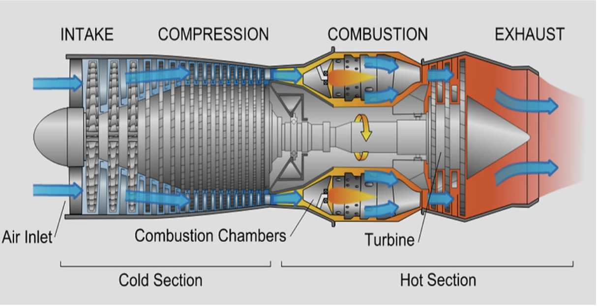
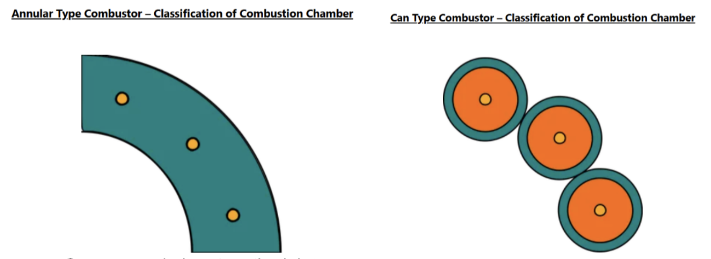

Engineering• Aviation
The genius behind jet engines: an oversimplification on how they work
Despite its notoriously difficult mechanics, the inner workings of a jet engine can be separated into a sequence of events that can be explained simply: intake, compression, combustion and exhaustion. These stages are the fundamentals to how modern planes fly.
Jet engines are usually split into two categories: high and low bypass. “Bypass” refers to the intake air that does not pass through into the main core (where all the compression and combustion happen.)
Why this matters is because this key feature determines thrust and fuel efficiency, making the design choice crucial in different contexts. A commercial aircraft would feature a high bypass engine, where it would benefit from cost savings in fuel, and producing fewer emissions. A military aircraft, however, would use a low bypass engine, as they produce much higher thrust and therefore greater speeds.

Intake
- The front fan pulls in a huge volume of air, with most commercial aircraft achieving over 1.2 tons of air intake per second.
- The air then enters the compression chamber.
- Some air is taken into the core but some “bypasses” around it. As addressed before, the amount of air that goes through the core depends on the design of the engine.
Compression
- The incoming air is then forced into an increasingly restricted chamber.
- A single compression stage consists of a high-speed, spinning rotor paired with a ring of stationary blades (known as stator vanes), which are attached to the core casing.
- Compressors come in different designs, such as axial (stationary and rotating blades) and centrifugal (rotating impeller disk). Axial is the one being described.
- The rotor blades swirl over the incoming air around, forcing it through the compressor.
- Meanwhile, the stator vanes slow down the momentum of the air, increasing the air pressure rapidly.
- Some compression chambers can reach a compression ratio of over 40:1, meaning that the air pressure at the end of the chamber is over 40 times the air at the beginning of the chamber. The blades can also reach speeds of up to 1000 mph at full power.
Combustion
- Air is mixed with fuel and ignited, releasing a jet of extremely high-powered gas.
- Combustors also have many different designs, such as annular (ring-shaped) and can-type (self-contained cylindrical combustion chambers). Annular is the one being described.

- Compressed air enters the inlet nozzles, each equipped with a fuel injector.
- Ignitor plugs ignite the mixture, which spreads the reaction evenly around the ring.
- As long as air and fuel are supplied, combustion continues.
Exhaustion
- Before being expelled out of the engine, the extremely high temperature exhaust gasses pass through turbines at the rear of the engine.
- A majority of the energy generated by the turbine is used to power the front fan, and a small percentage is allocated to power the compressor stages.
- Some air from the compressor is diverted to cool the turbine fans, which can become extremely hot.
- Finally, the exhausted passes over the exhaust cone, a specially designed feature of the jet engine which is shaped to accelerate exhaust streams and therefore maximise thrust.
- Exhaust velocity is a major factor in jet engine noise. To reduce noise, high bypass engines are used, since the higher volume of slow-moving bypass air surrounds the fast-moving exhaust gasses for quieter operation.
Lower bypass engines may also feature a component known as an “afterburner.” This is a second stage of combustion, where additional fuel is sprayed into a jet pipe section, where it mixes with exhaust gas and is ignited. However, afterburner is greatly fuel inefficient, meaning the second stage of combustion is usually only used in short bursts during take-off, climb (rise in altitude/ vertical ascent), or combat manoeuvres. The afterburner is equipped with an exhaust nozzle that is adjustable in radius. This can control the maximum exhaust acceleration, which is critical, considering back-pressure can harm parts of the engine.
These four processors form a simplification on how jet engines work, reducing its violently chaotic engineering into its basic form.
Over time, like with many technologies, jet engines have rapidly transformed in both how they are designed and used in industry. Under increasing pressure to reduce carbon emissions, the aviation industry has also begun to consider hybrid engines, featuring electric counterparts to the traditional ones.
Overall, the science behind jet engines proves to be an increasingly fascinating topic, considering the multitude of design options as well as the implementation of newer technologies which can revolutionise how we view air travel.